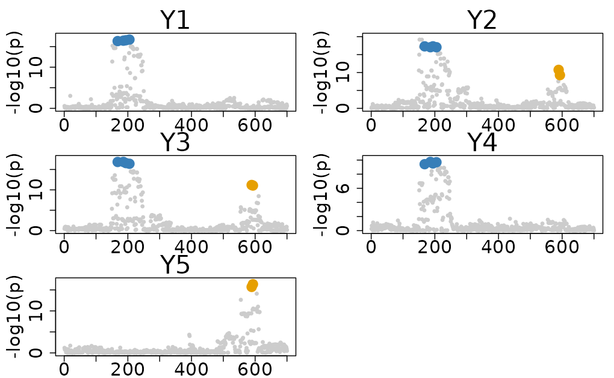

Individual Level Data Colocalization
Source:vignettes/Individual_Level_Colocalization.Rmd
Individual_Level_Colocalization.RmdColocBoost provides a flexible interface for individual-level colocalization analysis across multiple formats. We recommend using individual level genotype and phenotype data when available, to gain both sensitivity and precision compared to summary statistics-based approaches.
This vignette demonstrates how to perform multi-trait colocalization
analysis using individual level data in ColocBoost, specifically
focusing on the Ind_5traits dataset included in the
package.
1. The Ind_5traits Dataset
The Ind_5traits dataset contains 5 simulated phenotypes
alongside corresponding genotype matrices. The dataset is specifically
designed to evaluate and demonstrate the capabilities of ColocBoost in
multi-trait colocalization analysis with individual-level data.
-
X: A list of genotype matrices for different outcomes. -
Y: A list of phenotype vectors for different outcomes. -
true_effect_variants: True effect variants indices for each trait.
Causal variant structure
The dataset features two causal variants with indices 194 and 589.
- Causal variant 194 is associated with traits 1, 2, 3, and 4.
- Causal variant 589 is associated with traits 2, 3, and 5.
This structure creates a realistic scenario where multiple traits are influenced by different but overlapping sets of genetic variants.
# Loading the Dataset
data(Ind_5traits)
names(Ind_5traits)
#> [1] "X" "Y" "true_effect_variants"
Ind_5traits$true_effect_variants
#> $Outcome_1
#> [1] 194
#>
#> $Outcome_2
#> [1] 194 589
#>
#> $Outcome_3
#> [1] 194 589
#>
#> $Outcome_4
#> [1] 194
#>
#> $Outcome_5
#> [1] 589Due to the file size limitation of CRAN release, this is a subset of simulated data. See full dataset in colocboost paper repo.
2. Matched individual level input and
The preferred format for colocalization analysis in ColocBoost using individual level data is where genotype () and phenotype () data are properly matched.
-
Basic format:
XandYare organized as lists, matched by trait index,-
(X[1], Y[1])contains individual level data for trait 1, -
(X[2], Y[2])contains individual level data for trait 2, - And so on for each trait under analysis.
-
-
Cross-trait flexibility:
- There is no requirement for the same individuals across different traits. This allows for the analysis of traits with different sample sizes.
- This is particularly useful when you have a large dataset with many traits and want to focus on specific individuals for each trait.
This function requires specifying genotypes X and
phenotypes Y from the dataset:
# Extract genotype (X) and phenotype (Y) data
X <- Ind_5traits$X
Y <- Ind_5traits$Y
# Run colocboost with matched data
res <- colocboost(X = X, Y = Y)
#> Validating input data.
#> Starting gradient boosting algorithm.
#> Gradient boosting for outcome 4 converged after 40 iterations!
#> Gradient boosting for outcome 5 converged after 59 iterations!
#> Gradient boosting for outcome 1 converged after 61 iterations!
#> Gradient boosting for outcome 3 converged after 91 iterations!
#> Gradient boosting for outcome 2 converged after 94 iterations!
#> Performing inference on colocalization events.
#> Extracting colocalization results with pvalue_cutoff = 0.001, cos_npc_cutoff = 0.2, and npc_outcome_cutoff = 0.2.
#> Keep only CoS with cos_npc >= 0.2. For each CoS, keep the outcomes configurations that pvalue of variants for the outcome < 0.001 and npc_outcome >0.2.
# Identified CoS
res$cos_details$cos$cos_index
#> $`cos1:y1_y2_y3_y4`
#> [1] 186 194 168 205
#>
#> $`cos2:y2_y3_y5`
#> [1] 589 593
# Plotting the results
colocboost_plot(res)
Results Interpretation
For comprehensive tutorials on result interpretation and advanced visualization techniques, please visit our tutorials portal at Visualization of ColocBoost Results and Interpret ColocBoost Output.
3. Other structures of individual level data
3.1. Single genotype matrix
When studying multiple traits with a common genotype matrix, such as gene expression in different tissues or cell types, we provide the interface for one single genotype matrix with multiple phenotypes. This is particularly useful when the same individuals are used for different traits, allowing for efficient analysis without redundancy.
-
Input Format:
-
Xis a single matrix containing genotype data for all individuals. -
Ycan be i) a matrix with dimension; ii) a list of phenotype vectors for traits.
-
# Extract a single SNP (as a vector)
X_single <- X[[1]] # First SNP for all individuals
# Run colocboost
res <- colocboost(X = X_single, Y = Y)
#> Validating input data.
#> Starting gradient boosting algorithm.
#> Gradient boosting for outcome 4 converged after 40 iterations!
#> Gradient boosting for outcome 5 converged after 59 iterations!
#> Gradient boosting for outcome 1 converged after 61 iterations!
#> Gradient boosting for outcome 3 converged after 91 iterations!
#> Gradient boosting for outcome 2 converged after 94 iterations!
#> Performing inference on colocalization events.
#> Extracting colocalization results with pvalue_cutoff = 0.001, cos_npc_cutoff = 0.2, and npc_outcome_cutoff = 0.2.
#> Keep only CoS with cos_npc >= 0.2. For each CoS, keep the outcomes configurations that pvalue of variants for the outcome < 0.001 and npc_outcome >0.2.
# Identified CoS
res$cos_details$cos$cos_index
#> $`cos1:y1_y2_y3_y4`
#> [1] 186 194 168 205
#>
#> $`cos2:y2_y3_y5`
#> [1] 589 5933.2. Genotype matrix is a superset of individuals across different phenotypes
When the genotype matrix includes a superset of individuals across different phenotypes, with Input Format:
-
Xis a matrix of genotype data for all individuals. -
Yis a list of phenotype vectors for different traits. - Row names of both
XandYshould be provided to match individuals - same format of individual id. - It is better if
Xcontain all individuals present in the phenotype vectors (optional). - This is particularly useful when you have a large genotype matrix and want to use it for multiple phenotypes with different individuals. It allows for efficient analysis without redundancy.
# Create phenotype with different samples - remove 50 samples trait 1 and trait 3.
X_superset <- X[[1]]
Y_remove <- Y
Y_remove[[1]] <- Y[[1]][-sample(1:length(Y[[1]]),50), , drop=F]
Y_remove[[3]] <- Y[[3]][-sample(1:length(Y[[3]]),50), , drop=F]
# Run colocboost
res <- colocboost(X = X_superset, Y = Y_remove)
#> Validating input data.
#> Starting gradient boosting algorithm.
#> Gradient boosting for outcome 4 converged after 38 iterations!
#> Gradient boosting for outcome 1 converged after 51 iterations!
#> Gradient boosting for outcome 5 converged after 62 iterations!
#> Gradient boosting for outcome 2 converged after 98 iterations!
#> Gradient boosting for outcome 3 converged after 99 iterations!
#> Performing inference on colocalization events.
#> Extracting colocalization results with pvalue_cutoff = 0.001, cos_npc_cutoff = 0.2, and npc_outcome_cutoff = 0.2.
#> Keep only CoS with cos_npc >= 0.2. For each CoS, keep the outcomes configurations that pvalue of variants for the outcome < 0.001 and npc_outcome >0.2.
# Identified CoS
res$cos_details$cos$cos_index
#> $`cos1:y1_y2_y3_y4`
#> [1] 205 186 194 168
#>
#> $`cos2:y2_y3_y5`
#> [1] 589 5933.3. Arbitrary input matrices with mapping dictionary provided
When studying multiple traits with arbitrary genotype matrices for different traits, we also provide the interface for arbitrary genotype matrices with multiple phenotypes. This particularly benefits meta-analysis across heterogeneous datasets where, for different subsets of traits, genotype data comes from different genotyping platforms or sequencing technologies.
-
Input Format:
-
X = list(X1, X3)is a list of genotype matrices. -
Y = list(Y1, Y2, Y3, Y4, Y5)is a list of phenotype vectors, where traits 1 and 2 matched to the 1st genotype matrixX1; traits 3,4,5 matched to 2nd genotype matrixX3. -
dict_YXis a dictionary matrix that index of Y to index of X.
-
# Create a simple dictionary for demonstration purposes
X_arbitrary <- X[c(1,3)]
dict_YX = cbind(c(1:5), c(1,1,2,2,2))
# Display the dictionary
dict_YX
#> [,1] [,2]
#> [1,] 1 1
#> [2,] 2 1
#> [3,] 3 2
#> [4,] 4 2
#> [5,] 5 2
# Run colocboost
res <- colocboost(X = X_arbitrary, Y = Y, dict_YX = dict_YX)
#> Validating input data.
#> Starting gradient boosting algorithm.
#> Gradient boosting for outcome 4 converged after 40 iterations!
#> Gradient boosting for outcome 5 converged after 59 iterations!
#> Gradient boosting for outcome 1 converged after 61 iterations!
#> Gradient boosting for outcome 3 converged after 91 iterations!
#> Gradient boosting for outcome 2 converged after 94 iterations!
#> Performing inference on colocalization events.
#> Extracting colocalization results with pvalue_cutoff = 0.001, cos_npc_cutoff = 0.2, and npc_outcome_cutoff = 0.2.
#> Keep only CoS with cos_npc >= 0.2. For each CoS, keep the outcomes configurations that pvalue of variants for the outcome < 0.001 and npc_outcome >0.2.
# Identified CoS
res$cos_details$cos$cos_index
#> $`cos1:y1_y2_y3_y4`
#> [1] 186 194 168 205
#>
#> $`cos2:y2_y3_y5`
#> [1] 589 593